Gaussian Processes Models
Outline
- Introduction Gaussian Processes
- Gaussian Processes for Spatial Autocorrelation
- Introduction Gaussian Processes for Timeseries
Previously we have encountered Timeseries
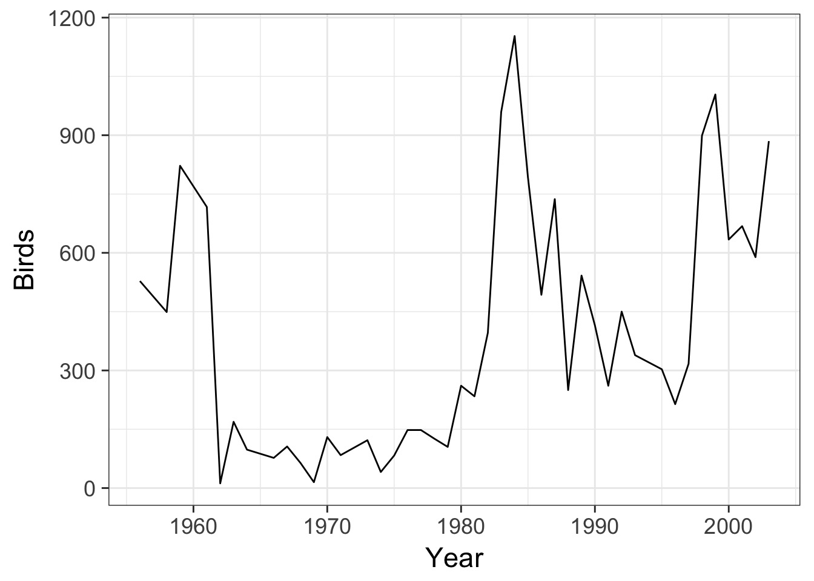
Correlation in Residuals
library(nlme)
birds_lm <- gls(Birds ~ Year, data=oahu_data)
acf(residuals(birds_lm))
Many ways of modeling autocorrelation
\[ \epsilon_{t} = \rho \epsilon_{t-1} + \zeta_{t}\]
which produces
\[ cor(\epsilon) = \begin{pmatrix}
1 & \rho &\rho^{2} \\
\rho & 1& \rho\\
\rho^{2} & \rho & 1
\end{pmatrix}\]
for n=3 time steps
Many ways of modeling autocorrelation
> - Lagged models (\(y_t = \beta y_{t-1}\))
> - AR1 or AR2 correlation
> - ARMA (autoregressive moving average)
> - ARIMA > - ARCH (SD varies over time, but not mean)
> - GARCH (SD and mean vary over time)
> - Continuous error structure for gaps (CAR1, CAR2)
Continuous error useful for spatial autocorrelation

Spatial Autocorrelation in Residuals

Spatial Autocorrelation Variograms!
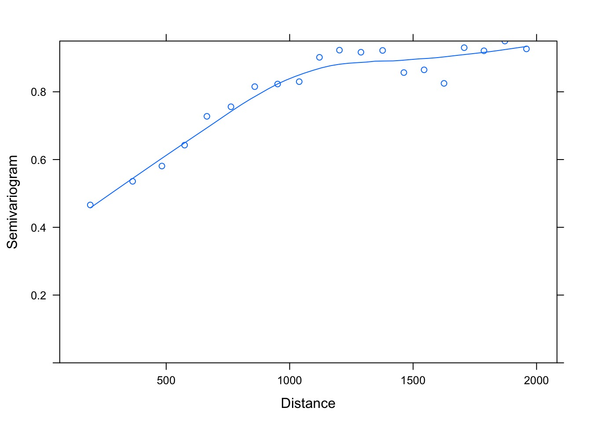
What shape defines autocorrelation?
Consider: \[ K_{ij} = \begin{pmatrix}
\sigma_1^2 & \sigma_1\sigma_2 &\sigma_1\sigma_3 \\
\sigma_1\sigma_2 & \sigma_2^2& \sigma_2\sigma_3\\
\sigma_1\sigma_3 & \sigma_2\sigma_3 & \sigma_3^2
\end{pmatrix}\]
What is the function that defines \(\sigma_i\sigma_j\) based on the distance between i and j?
Different Shapes of Autocorrelation

Linking Multilevel Models and Correlation: Consider sampling for greeness
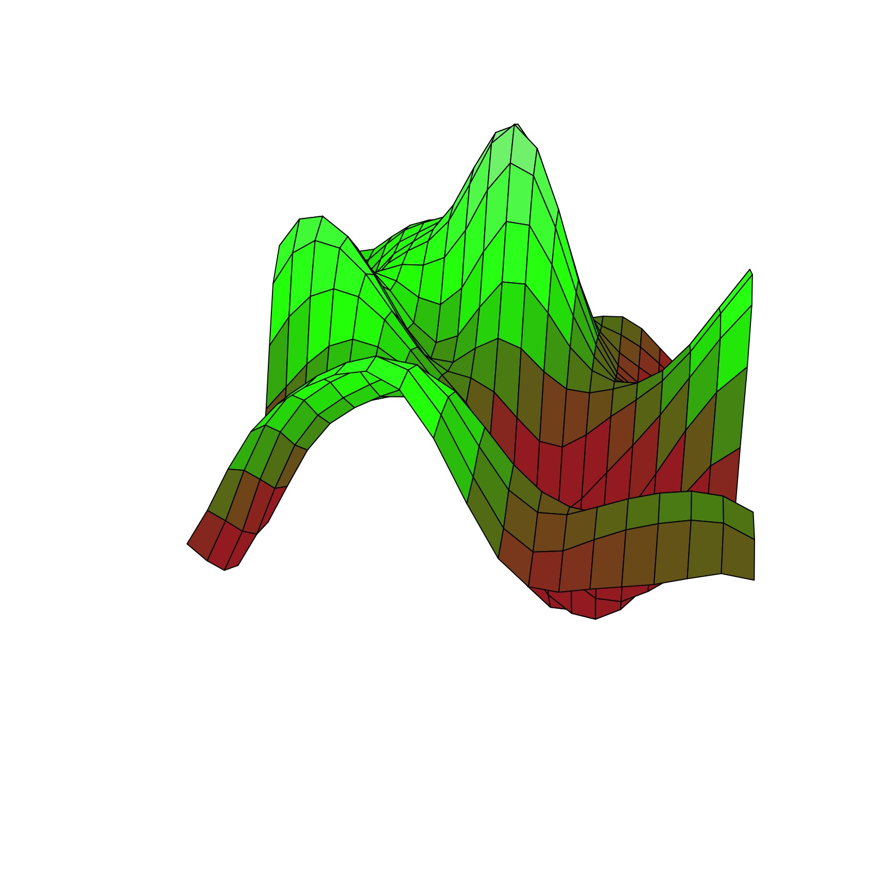
Random Intercept model for greeness
Likelihood\(Green_i \sim Normal(\mu_{green}, \sigma_{green})\)
Data Generating Process
\(\mu_{green} = \overline{a} + a_{patch}\)
\(a_{patch} \sim dnorm(0, \sigma_{patch})\)
Introducing Gaussian Processes
A GP is a random process creating a multivariate normal distribution between points where the covariance between points is related to their distance.
\[a_{patch} \sim MVNorm(0, K)\]\[K_{ij} = F(D_{ij})\]
The Squared Exponential Function(kernel)
\[K_{ij} = \eta^2 exp \left( -\frac{D_{ij}^2}{2 \mathcal{l}^2} \right)\]
where \(\eta^2\) provides the scale of the function and \(\mathcal{l}\) the timescale of the process
The Squared Exponential Covariance Function (kernel)
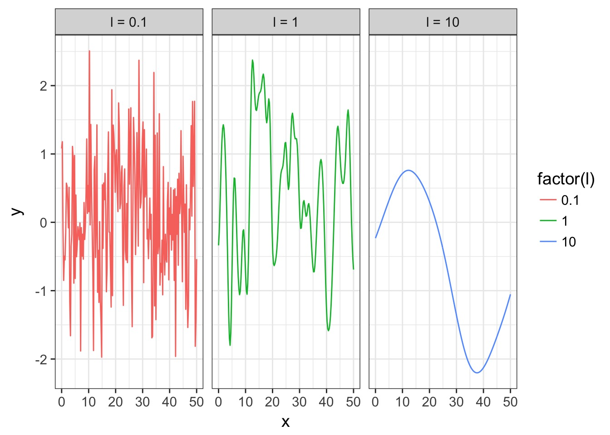
A surface from a Squared Exponential GP
Squared Exponential v. Squared AR1 Dropoff
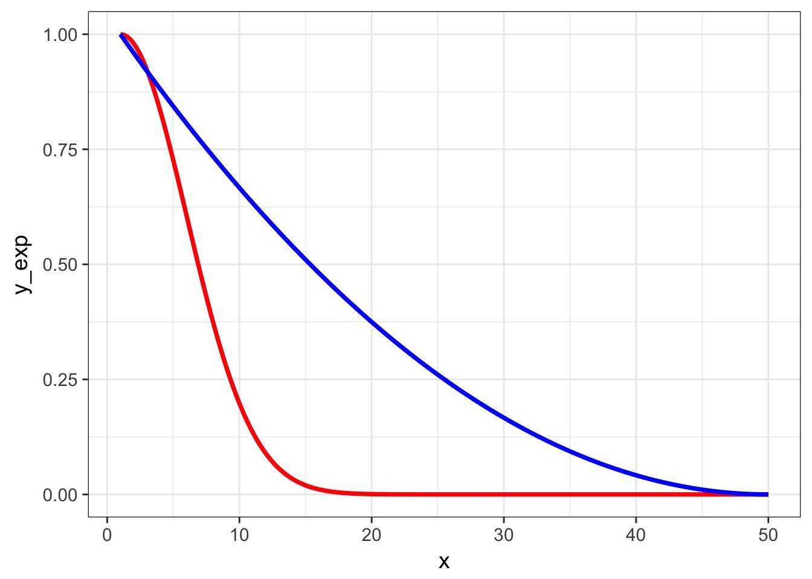
Other Covariance Functions
- Periodic: \(K_{P}(i,j) = \exp\left(-\frac{ 2\sin^2\left(\frac{D_{ij}}{2} \right)}{\mathcal{l}^2} \right)\)
- VERY useful
- VERY useful
- Ornstein–Uhlenbeck: \(K_{OI}(i,j) = \eta^2 exp \left( -\frac{|D_{ij}|}{\mathcal{l}} \right)\)
- Quadratic \(K_{RQ}(i,j)=(1+|d|^{2})^{-\alpha },\quad \alpha \geq 0\)
The Squared Exponential Function in rethinking (with GLP2)
\[K_{ij} = \eta^2 exp \left( -\frac{D_{ij}^2}{2 \mathcal{l}^2} \right)\]rethinking:
\[K_{ij} = \eta^2 exp \left( -\rho^2 D_{ij}^2 \right) + \delta_{ij}\sigma^2\]
Operationalizing a GP
Let’s assume a Squared Exponential GP with an \(\eta^2\) and \(\mathcal{l}\) of 1. Many possible curves: 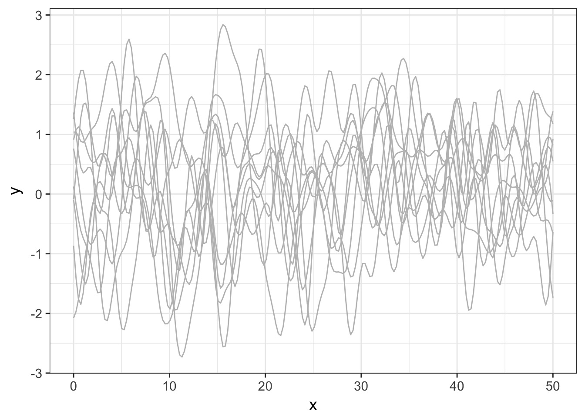
Operationalizing a GP
And actually, on average 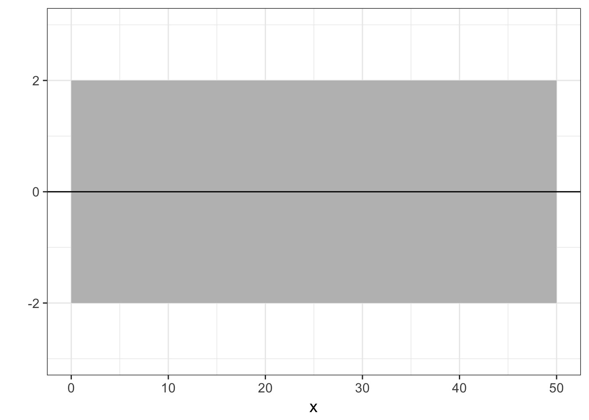
But once we add some data…
Pinching in around observations! 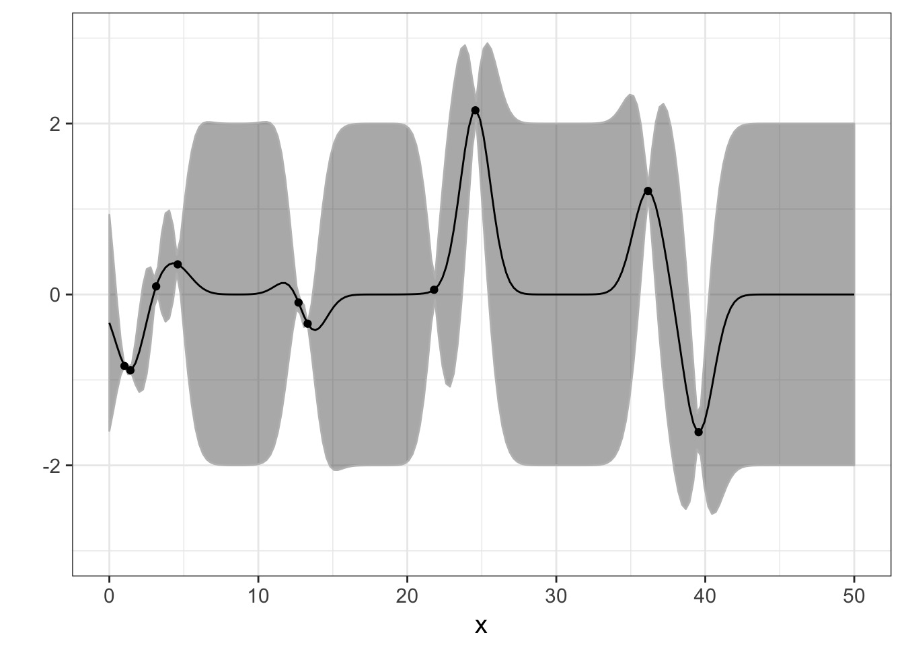
Warnings!
- Not mechanistic!
- But can incorporate many sources of variability
- e.g., recent analysis showing multiple GP underlying Zika for forecasting
- e.g., recent analysis showing multiple GP underlying Zika for forecasting
- Can mix mechanism and GP
Outline
- Introduction Gaussian Processes
- Gaussian Processes for Spatial Autocorrelation
- Introduction Gaussian Processes for Timeseries
Oceanic Tool Use

culture population contact total_tools mean_TU lat lon lon2
1 Malekula 1100 low 13 3.2 -16.3 167.5 -12.5
2 Tikopia 1500 low 22 4.7 -12.3 168.8 -11.2
3 Santa Cruz 3600 low 24 4.0 -10.7 166.0 -14.0
4 Yap 4791 high 43 5.0 9.5 138.1 -41.9
5 Lau Fiji 7400 high 33 5.0 -17.7 178.1 -1.9
6 Trobriand 8000 high 19 4.0 -8.7 150.9 -29.1
logpop
1 7.003065
2 7.313220
3 8.188689
4 8.474494
5 8.909235
6 8.987197Distances between islands
data(islandsDistMatrix)
islandsDistMatrix Malekula Tikopia Santa Cruz Yap Lau Fiji Trobriand Chuuk
Malekula 0.000 0.475 0.631 4.363 1.234 2.036 3.178
Tikopia 0.475 0.000 0.315 4.173 1.236 2.007 2.877
Santa Cruz 0.631 0.315 0.000 3.859 1.550 1.708 2.588
Yap 4.363 4.173 3.859 0.000 5.391 2.462 1.555
Lau Fiji 1.234 1.236 1.550 5.391 0.000 3.219 4.027
Trobriand 2.036 2.007 1.708 2.462 3.219 0.000 1.801
Chuuk 3.178 2.877 2.588 1.555 4.027 1.801 0.000
Manus 2.794 2.670 2.356 1.616 3.906 0.850 1.213
Tonga 1.860 1.965 2.279 6.136 0.763 3.893 4.789
Hawaii 5.678 5.283 5.401 7.178 4.884 6.653 5.787
Manus Tonga Hawaii
Malekula 2.794 1.860 5.678
Tikopia 2.670 1.965 5.283
Santa Cruz 2.356 2.279 5.401
Yap 1.616 6.136 7.178
Lau Fiji 3.906 0.763 4.884
Trobriand 0.850 3.893 6.653
Chuuk 1.213 4.789 5.787
Manus 0.000 4.622 6.722
Tonga 4.622 0.000 5.037
Hawaii 6.722 5.037 0.000What if I needed to make a distance matrix?
dist(cbind(Kline2$lat, Kline2$lon)) 1 2 3 4 5 6
2 4.205948
3 5.797413 3.224903
4 39.115214 37.652756 34.444884
5 10.692053 10.754069 13.978913 48.371893
6 18.257053 18.258423 15.231874 22.250393 28.650305
7 28.539446 26.152055 23.129418 13.662357 36.500137 16.115210
8 25.019992 24.158849 20.946837 14.560220 34.882660 7.717513
9 342.735029 344.115112 341.361524 314.800540 353.317336 326.339486
10 325.121593 325.994172 323.052503 293.884076 335.811629 307.831464
7 8 9
2
3
4
5
6
7
8 10.599057
9 328.049082 322.665802
10 307.454208 303.298945 45.534273Well, convert lat/lon to UTM first, and to matrix after dist
Our GP Model
Likelihood\(Tools_i \sim Poisson(\lambda_i)\)
Data Generating Process \(log(\lambda_i) = \alpha + \gamma_{society} + \beta log(Population_i)\)
\(\gamma_{society} \sim MVNormal((0, ....,0), K)\)
\(K_{ij} = \eta^2 exp \left( -\rho^2 D_{ij}^2 \right) + \delta_{ij}(0.01)\)
Priors
\(\alpha \sim Normal(0,10)\)
\(\beta \sim Normal(0,1)\)
\(\eta^2 \sim HalfCauchy(0,1)\)
\(\rho^2 \sim HalfCauchy(0,1)\)
Quick note on Priors…
https://github.com/stan-dev/stan/wiki/Prior-Choice-Recommendations
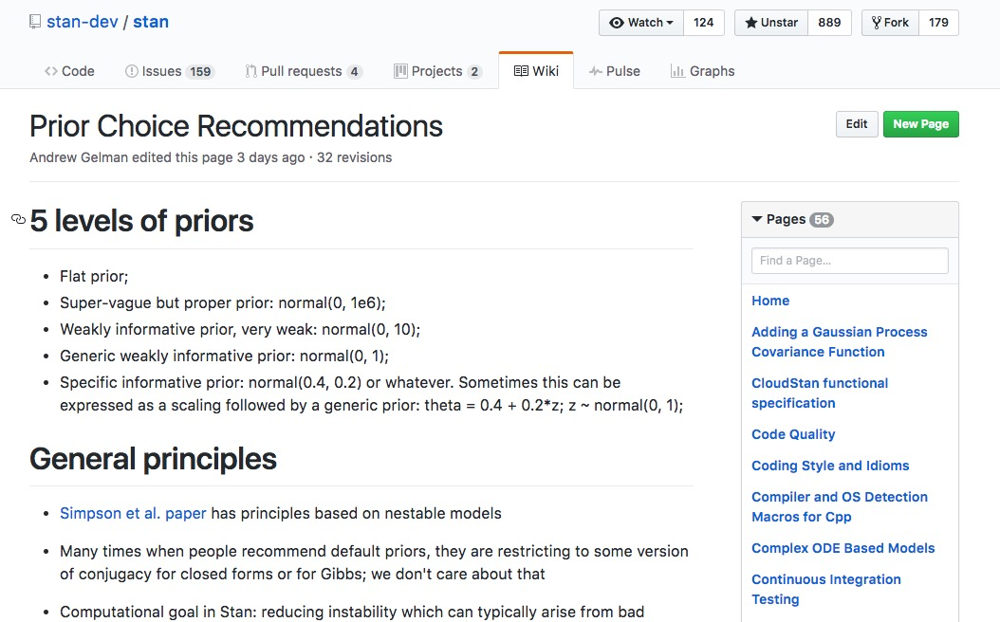
Our model
Kline2$society <- 1:nrow(Kline2)
k2mod <- alist(
#likelihood
total_tools ~ dpois(lambda),
#Data Generating Process
log(lambda) <- a + g[society] + bp*logpop,
g[society] ~ GPL2( Dmat , etasq , rhosq , 0.01 ),
#Priors
a ~ dnorm(0,10),
bp ~ dnorm(0,1),
etasq ~ dcauchy(0,1),
rhosq ~ dcauchy(0,1)
)GPL2
g[society] ~ GPL2( Dmat , etasq , rhosq , 0.01)
- Note that we supply a distance matrix
- GPL2 explicitly creates the MV Normal density, but only requires parameters
Fitting - a list shall lead them
- We have data of various classes (e.g. matrix, vectors)
- Hence, we use a list
- This can be generalized to many cases, e.g. true multilevel models
k2fit <- map2stan(k2mod,
data = list(
total_tools = Kline2$total_tools,
logpop = Kline2$logpop,
society = Kline2$society,
Dmat = islandsDistMatrix),
warmup=2000 , iter=1e4 , chains=3)Did it converge?
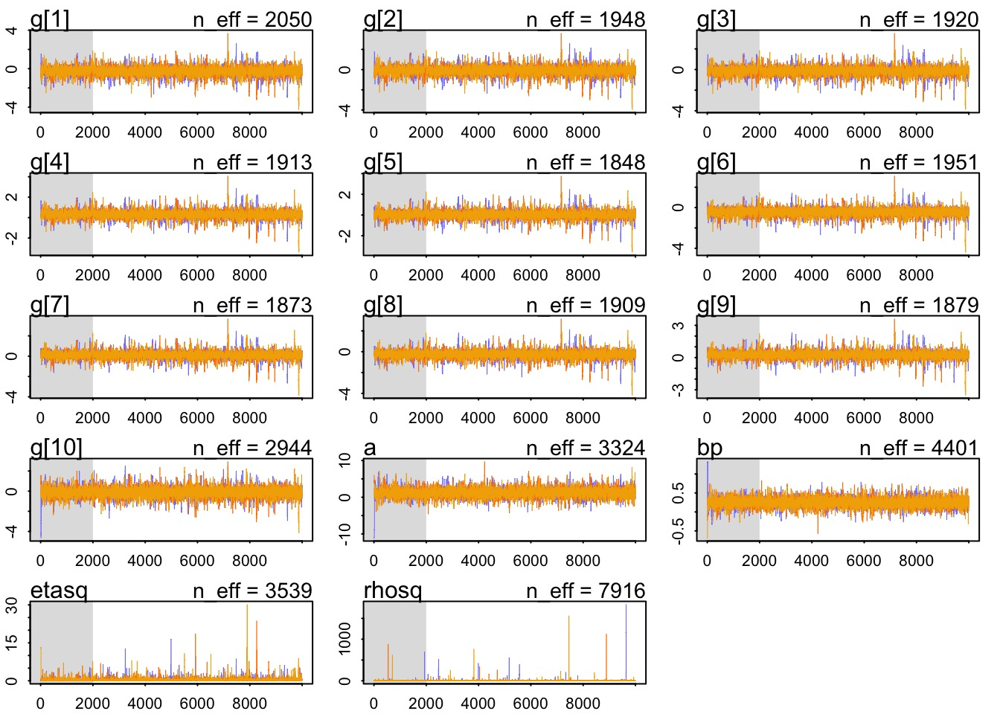
Did it fit?
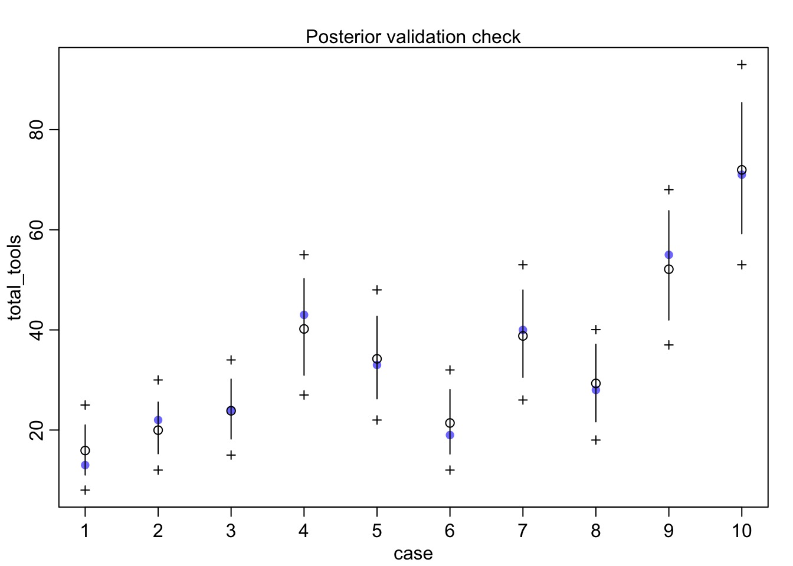
What does it all mean?
Mean StdDev lower 0.89 upper 0.89 n_eff Rhat
a 1.26 1.19 -0.56 3.13 3324 1
bp 0.25 0.12 0.07 0.43 4401 1
etasq 0.37 0.63 0.00 0.75 3539 1
rhosq 1.94 24.43 0.01 2.07 7916 1What is our covariance function by distance?
#get samples
k2_samp <- extract.samples(k2fit)
#covariance function
cov_fun_rethink <- function(d, etasq, rhosq){
etasq * exp( -rhosq * d^2)
}
#make curves
decline_df <- crossing(data.frame(x = seq(0,10,length.out=200)),
data.frame(etasq = k2_samp$etasq[1:100],
rhosq = k2_samp$rhosq[1:100])) %>%
dplyr::mutate(covariance = cov_fun_rethink(x, etasq, rhosq))Covariance by distance
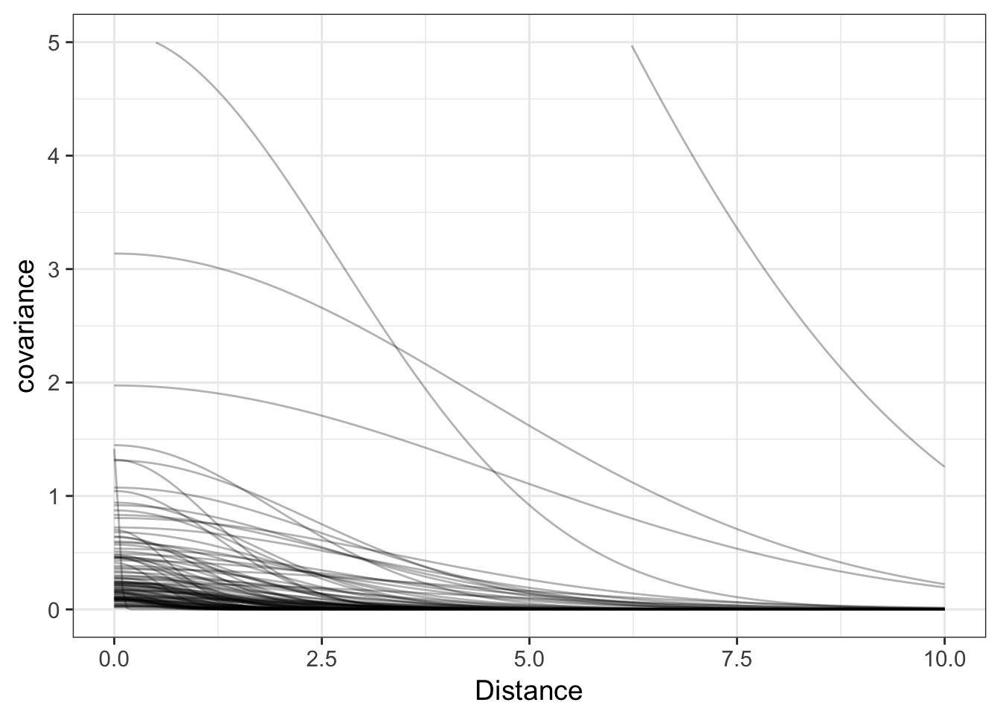
Correlation Matrix
cov_mat <- cov_fun_rethink(islandsDistMatrix,
median(k2_samp$etasq),
median(k2_samp$rhosq))
cor_mat <- cov2cor(cov_mat)Putting it all together…
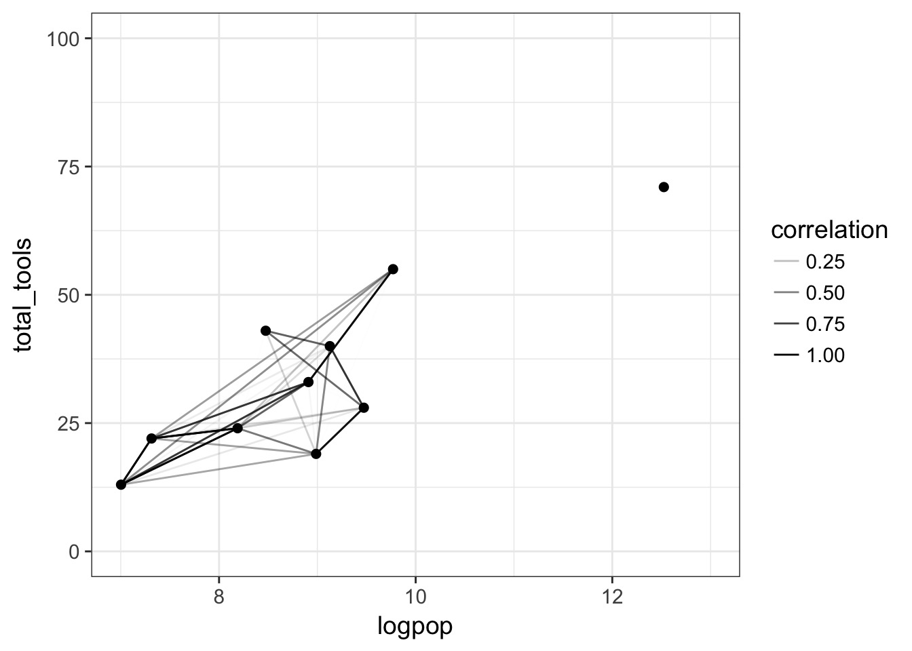
Putting it all together…
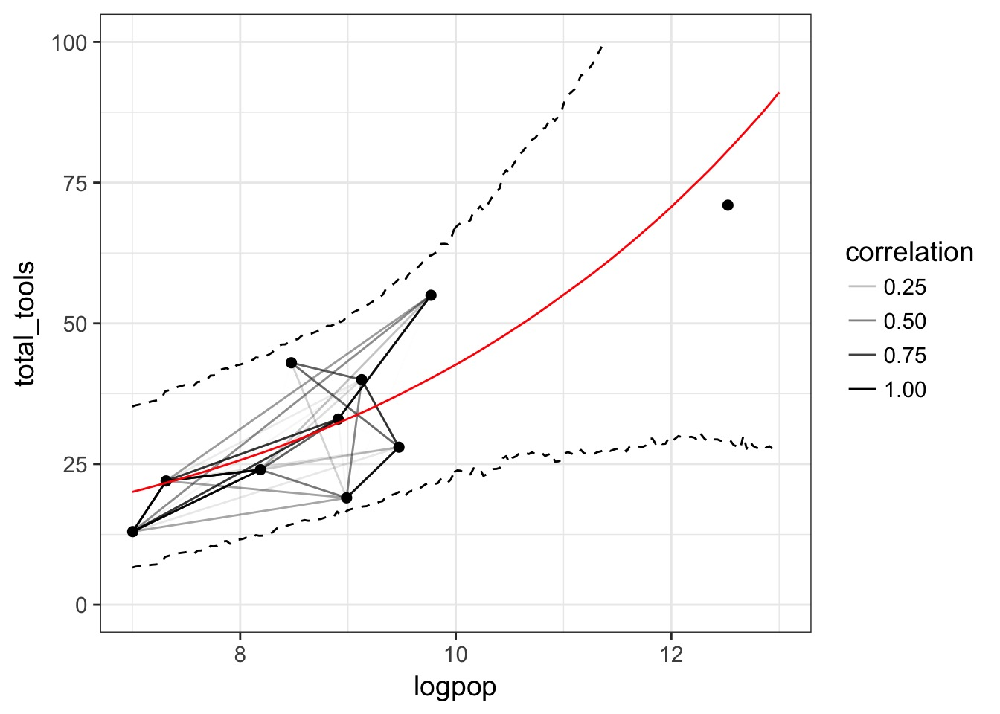
Outline
- Introduction Gaussian Processes
- Gaussian Processes for Spatial Autocorrelation
- Introduction Gaussian Processes for Timeseries
Kelp from spaaaace!!!

A Simple Gaussian Process Model
For time point i
Likelihood kelpi ~ Normal(\(\mu_i\), \(\sigma\))
Data Generating Process \(\mu_i \sim \alpha_i\)
\(\alpha_i\) ~ MVnormal((0, …0), K) \(K_{ij} = \eta^2 exp \left( -\rho^2 D_{ij}^2 \right) + \delta_{ij}(0.01)\)
Priors
\(\alpha \sim Normal(0,10)\)
\(\sigma \sim HalfCauchy(0,5)\)
\(\eta^2 \sim HalfCauchy(0,2)\)
\(\rho^2 \sim HalfCauchy(0,2)\)
\(\delta \sim HalfCauchy(0,2)\)
A Transformation and Complex models
- Specifying efficient priors can be difficult
- Scaling data can help with reasonable prior specification
- Centering removes need for mean parameter (no \(\overline{a}\))
- E.g. z-transformed kelp, or predictors
- This isn’t bad as a general practice, as back-scaling is easy
ltrmk3_clean <- ltrmk3 %>%
mutate(kelp_s = (X300m-mean(X300m, na.rm=T))/sd(X300m, na.rm=T) ) %>%
filter(!is.na(kelp_s)) Kelp Model
kelp_mod_noyear <- alist(
kelp_s ~ dnorm(mu, sigma),
mu <- a[time_idx],
a[time_idx] ~ GPL2( Dmat , etasq , rhosq , delta_sq),
sigma ~ dcauchy(0,5),
etasq ~ dcauchy(0,2),
delta_sq ~ dcauchy(0,2),
rhosq ~ dcauchy(0,2)
)Fitting
Need a time index and a distance matrix
#distance matrix, distance in seconds, so correct to days
kelp_dist_mat <- as.matrix(dist(ltrmk3_clean$Date))
kelp_dist_mat <- kelp_dist_mat/60/60/24
#fit!
kelp_fit_noyear <- map2stan(kelp_mod_noyear, data = list(
time_idx = 1:nrow(ltrmk3_clean),
kelp_s = ltrmk3_clean$kelp_s,
Dmat = kelp_dist_mat),
warmup=2000 , iter=1e4 , chains=3)Are we good?
[ 100 / 1000 ]
[ 200 / 1000 ]
[ 300 / 1000 ]
[ 400 / 1000 ]
[ 500 / 1000 ]
[ 600 / 1000 ]
[ 700 / 1000 ]
[ 800 / 1000 ]
[ 900 / 1000 ]
[ 1000 / 1000 ]
[ 100 / 1000 ]
[ 200 / 1000 ]
[ 300 / 1000 ]
[ 400 / 1000 ]
[ 500 / 1000 ]
[ 600 / 1000 ]
[ 700 / 1000 ]
[ 800 / 1000 ]
[ 900 / 1000 ]
[ 1000 / 1000 ]
The Fit from Link
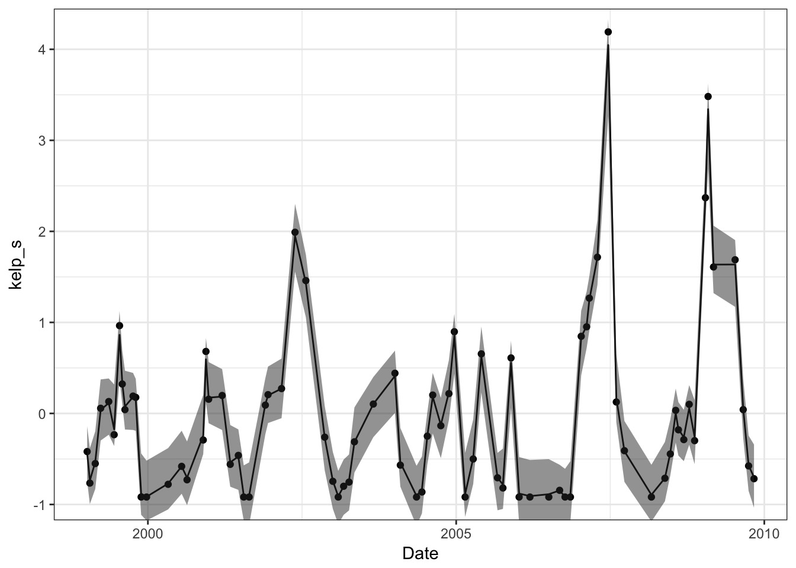 With an l = 58.4 days
Two options for interpolation/prediction
- Refit the model with NA values to forecast predictions
- Gets at uncertainty within the model
- Missing data imputation
- Slow
- Gets at uncertainty within the model
- Recalculate covariance matrices given GP and use formulae
- Need to roll your own
- But I’ll give you a function…
- Creating predictions not automatic!
- Need to roll your own
Data Imputation Approach
#new dates with 51 day intervals
date_delta <- round(mean(ltrmk3_clean$Date-lag(ltrmk3_clean$Date), na.rm=T))
new_dates <- c(ltrmk3_clean$Date, seq(1,10)*date_delta+max(ltrmk3_clean$Date))
#make a new distance matrix
kelp_dist_mat_for_pred <- as.matrix(dist(new_dates))/60/60/24
#the fit, with NA for values to impute
#and start values to tell rethinking
#how much data is there
kelp_fit_noyear_pred <- map2stan(kelp_mod_noyear, data = list(
time_idx = 1:length(new_dates),
kelp_s = c(ltrmk3_clean$kelp_s, rep(NA, 10)),
Dmat = kelp_dist_mat_for_pred),
warmup=2000 , iter=1e4 , chains=3,
start=list(a=rep(0, length(new_dates))))Imputation
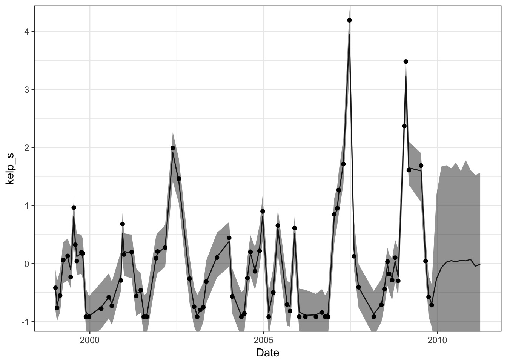
Or….
Plot those predictions!
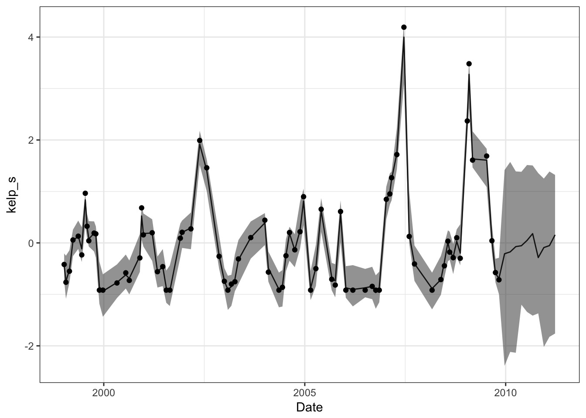
A Smooth Curve
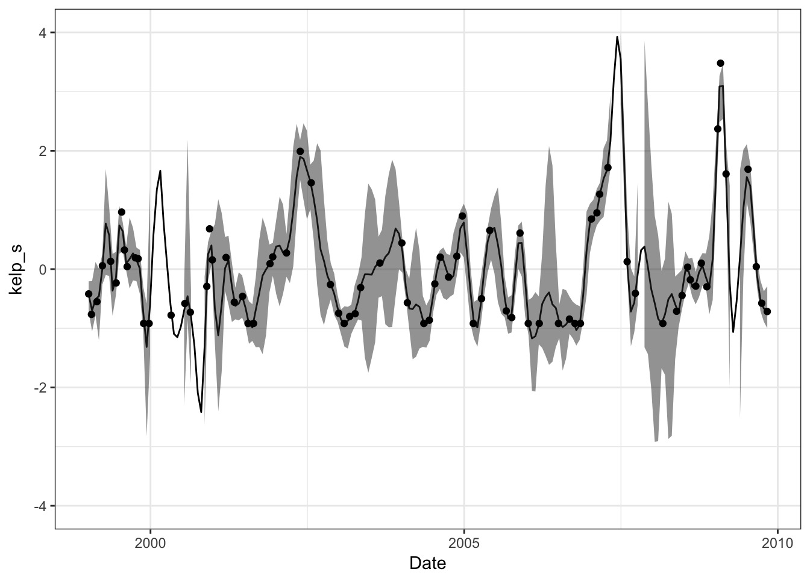
Or individual trajectories
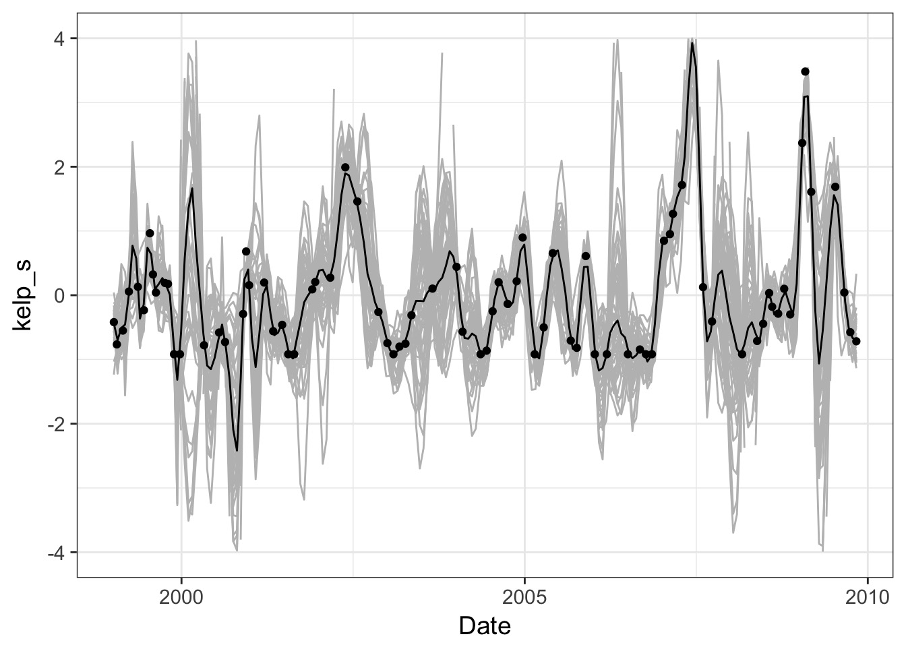
Take Homes
- Gaussian Process allow incorporation of non-mechanistic processes
- Accomodates many forms of autocorrelation
- Powerful, flexible, new
- Can incporpoate multiple sources of GP variability
- E.g. annual, decadal, multi-decadal signals
- Can incporpoate multiple sources of GP variability